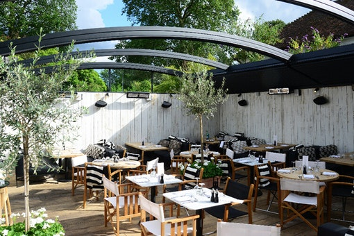
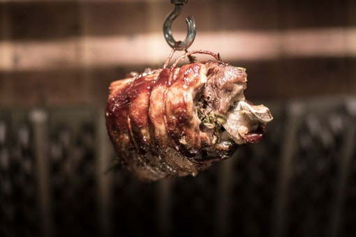
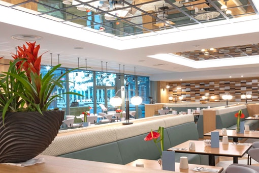
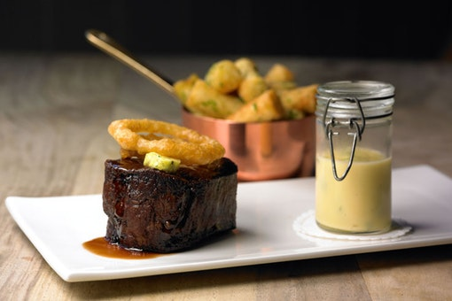
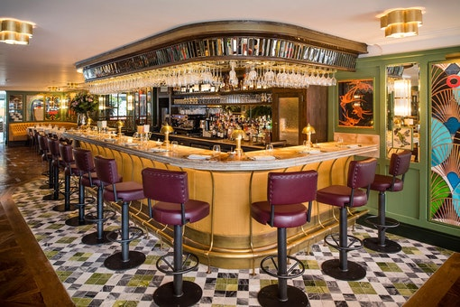
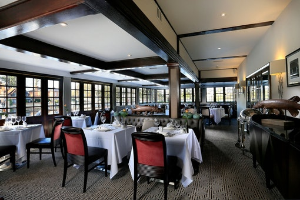
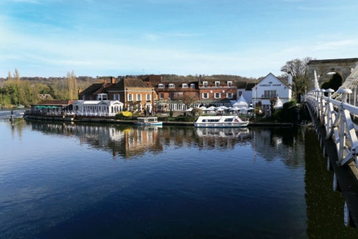
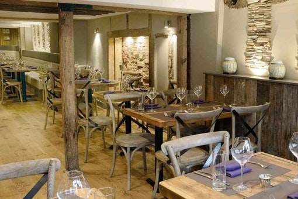

Marlow

Located on the charming town’s busy High Street, The Marlow Bar & Grill is a local favourite. Inspired by the boating activity on the River Thames, which lies just yards away, the restaurant décor consists of navy blue leather, teak, and stainless steel, whilst the monochrome photography adorning the walls give the building both a modern feel and a sense of nostalgia. Visitors to the restaurant can relax and enjoy themselves in the bar lounge, or alternatively dine in the restaurant whilst watching the chefs in action in the open kitchen. There is also a heated undercover terrace, located at the rear, which is perfect for whiling away the evening alfresco style.

In stark contrast to the nearby Hand and Flowers, Kerridge’s second Marlow pub conversion is an eminently user-friendly, no-bookings all-day boozer-cum-eatery with a terrific atmosphere and capable staff. While you can expect to book a year ahead for a table at The Hand and Flowers, here you can walk in on the day you want to eat. No wonder some readers say they “prefer the one-star place to the two-star one” – and not only because The Coach serves “the best chips ever – served with béarnaise!” This compact, cosy pub puts the bar centre stage, with comfy leather banquettes, music playing and major sporting events shown on TVs. There’s bags of foodie appeal too, from breakfast right through to dinner. Breakfast ‘hotdogs’, kippers, kedgeree and a full English do the business first thing in the morning, though if you’ve never had a Staffordshire oatcake with bacon and cheese, you’re in for a treat.

Situated just outside Marlow town centre (but very easy to get to by car), light, bright recently-refurbished Glaze is the flagship restaurant of Marlow’s Crowne Plaza hotel. Featuring marble tiles and tables, plush green banquette seating and stylish lighting, it's a pleasant setting in which to enjoy a meal. The modern European cooking is based on tried-and-tested combinations of ingredients with the odd cheffy flourish. Confit duck terrine with a Madeira Jelly, apricot chutney and orange gel might be followed by lemon sole and king scallops wrapped in filo pastry, accompanied by braised salsify roasted in scallop roe.

Tom Kerridge is currently doing for Marlow what Rick Stein did for Padstow and Heston Blumenthal for Bray: his name is everywhere, and his fingers are in an increasing number of local pies – including The Coach and Butcher’s Tap pubs up the road in the centre of town as well as The Shed, a private dining room where you have a chef and kitchen all to yourself. And while he may have opened the swanky Kerridge’s Bar & Grill at the Corinthia Hotel London, The Hand remains the original and best expression of what Kerridge set out to do as a chef: open a proper pub that just happened to serve some really top-notch food.

Another outpost of Caprice Holdings’ ever-expanding brand of Ivy restaurants, The Ivy Marlow Garden is the third spin-off to be lavished with the ‘Garden’ moniker. Based on Marlow’s charming High Street, The Ivy Marlow Garden serves the classic all-day menu which Ivy restaurants have become synonymous with, in a large and impressively colourful dining room. This makes it an incredibly fun place to come if you’re wanting to go out for a meal with a touch of class, without having to spend the earth.

Dine in soft candlelight against a glittering backdrop of lights dancing on the River Thames at the Riverside Restaurant. The relaxing pastel shades of the Riverside provides a calming and contemporary setting for romantic meals and celebratory occasions, whilst the outdoor terrace is designed to make you feel like you are dining on a boat. Specialties include cream of celeriac and truffle soup and fillet of wild sea bass with fondant potato and a red wine sauce – or try to resist Scottish highland lamb with rosemary and garlic sauce and gratin potato.

Sindhu, the Sanskrit name for the Indus River, is a fitting title for a restaurant blending Atul Kochhar’s “highly accomplished” modern Indian food with the Compleat Angler’s views over the fast-paced Marlow weir. The hotel’s dining room has been transformed into a contemporary space of velvety greys and greens with polished mahogany tables. Cooking is subtle, with riffs on the familiar: homemade poppadoms and chutneys start things off, while grilled chicken in saffron cream and herbs is a fancy update of chicken tikka. Elsewhere, there are east-west crossovers such as pan-seared scallops with lentil salad and pickled vegetables or venison steak with artichoke pakora, chilli and chocolate gravy. We’re also sold on impressive meaty dishes such as lamb shank with chickpeas and turnips, while desserts promise plenty of surprises – perhaps tandoori pineapple with cashew nougat and yoghurt ice cream. Service is “good with kids” and they’re very considerate towards vegans too. To drink, Sindhu’s modest wine list is supplemented by a line-up of creative cocktails mixed enthusiastically by the bartenders. “Overall, it’s great!” concludes one fan.

We have friends in Marlow and they kept telling us that they needed a Thai restaurant like Giggling Squid. When Andy finally found a building I was shocked by the state of it; there was literally a puddle of water right in the middle of the floor, bright yellow paint on the walls… the whole thing was a ruin. We loved turning it around.